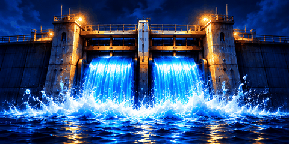

Visual demo / ข้อมูลจำลอง — ตัวเลขเปอร์เซ็นต์สื่อระดับประตูในภาพเท่านั้น ไม่ใช่ค่าจาก API ระดับน้ำหรืออุปกรณ์ประตูจริง เว็บไซต์นี้ไม่เปลี่ยนหน้า LED Production

กำลังแสดงภาพจำลองระดับ 51–75%
WebP ใช้งานบนเว็บเป็นหลัก; GIF เป็นทางเลือกสำรอง; PNG Sprite Strip เก็บเฟรมต้นฉบับ สามารถดูไฟล์ทั้งหมดใน Asset README.